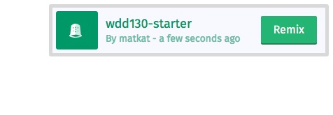
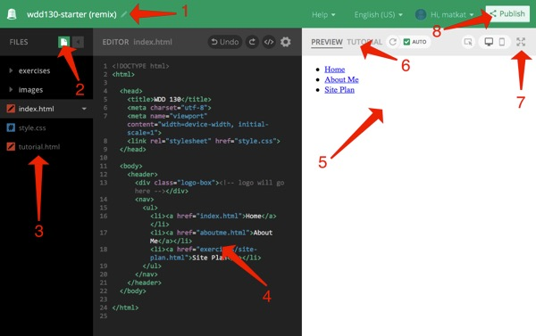

One of our goals for this class is to allow you to create a real website accessible with a browser. This,
as you will discover in the readings and videos for this week, requires you to have what is known as a host.
Most hosts cost money, but not all. For this class, we will be using a free service called
Thimble. Using this service allows you to create your website with their text editor, save the website, upload the
images for the website, and even share the website with an instructor or fellow student for collaboration.
There are a few steps we will need to go through to get everything set up so you are ready to begin..
Thimble Login
Visit the
Thimble website and click on the
Create an Account link in the top right corner of the screen. Enter a username, valid email,
and a password.
'Remix' the Starter project
Next we need to create a project for you to use this semester. Thimble makes use of a concept called
a 'Remix'. This is essentially taking an existing Thimble project and making a copy of it that you
can use and edit. I have prepared a project for this class that you should 'Remix'. Visit this
Starter ProjectAFTER logging into Thimble and then tap the '
Remix This' button in the top right corner of the window. This will create a personal copy
of it for you that you can edit.

Remix a Project
Become familiar with the interface
After remixing the project you should see something similar to the following:

Create a New Project
This is the current name of your project. You should change this to something more meaningful by
clicking on the name.
This is the button to add a new file or folder to your project. Right next to it is a button that
will hide the sidebar while you are working to free up more space.
This is the list of files in the project. Notice in the image that
index.html is selected and open in the editor. If
index.html is not open in your screen tap on it to open it.
This is the code editor. It is where we will spend most of our time writing HTML and CSS
This is where you will see the results of the code you write. It should automatically update when
you make changes as long as the green check mark is showing next to the word "Auto" at the top
of that pane.
This is where you can switch between previewing changes to the current file you are working on and
viewing a tutorial where you can find a collection of helpful tips and links from the course.
Tap here if you want to see your page in full screen mode.
Finally this is where you will tap to "Publish" your work. You
must publish your site before anyone else can see it. You must also
re-publish after you've made changes that you want someone (like a classmate or the
instructor) to see. You can also find the public link to your site here.
The first time you publish a New ProjectRe-publish a Project. The "Share" link above is what you will turn in for most of your assignments
in Ilearn.
Review the
index.html file
Below is the HTML code that is currently in the
index.html file.
<!DOCTYPE html>
<html>
<head>
<title>WDD 130</title>
<meta charset="utf-8">
<meta name="viewport" content="width=device-width, initial-scale=1">
<link rel="stylesheet" href="/styles.css">
</head>
<body>
<header>
<div><!-- logo will go here --></div>
<nav>
<ul>
<li><a href="index.html">Home</a></li>
<li><a href="aboutme.html">About Me</a></li>
<li><a href="exercises/site-plan.html">Site Plan</a></li>
</ul>
</nav>
</header>
</body>
</html>
It's ok if this doesn't make sense yet. We will eventually learn about what each line in this code does.
For now let's take a look at the page this code created. Make sure that the
index.html file is selected in the list of files and look in the Preview window in Thimble. You should see
a very basic page with only three links.
About me
Lets practice writing a little HTML of our own now. The next 'Getting to know you activity'will provide some practice.
Other Software
Here is a list of other software we will use this semester. These are all web based and require no installation.
Some would require account creation. Your instructor will give you more details when it is time to use
them:
Wireframe.cc Lightweight online tool for creating wireframes, or
Moqups Another wireframe creation choice. They also have a free educational account available.
Obtain by sending an email and requesting with your byui.edu school email account.